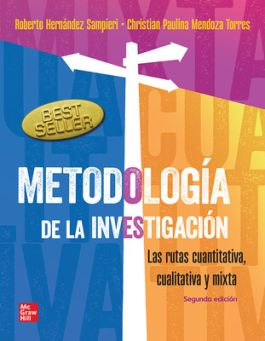
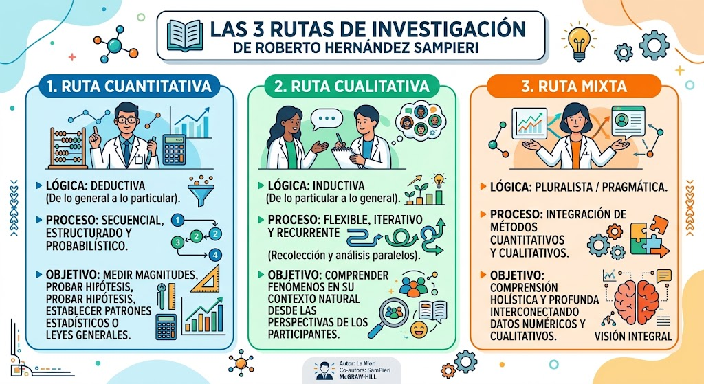
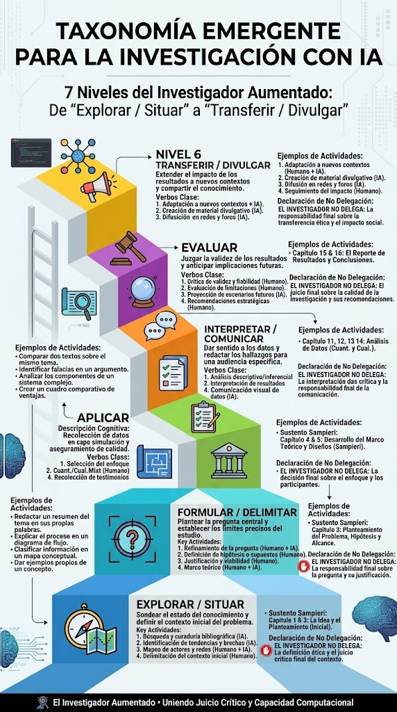

"7 niveles de pensamiento complejo · 3 rutas metodológicas · 9 pasos operativos · 1 enfoque de Marco Lógico"
📖 El Libro y el Autor
Marco referencial: Sampieri
🔄 Taxonomía Emergente
Los 7 niveles del investigador
🧭 ¿Qué ruta me corresponde?
Flujograma de decisión
🤖 Herramientas IA + Marco Lógico
Apoyo teórico y metodológico
🧩 Herramienta IA
Espacio para futura implementación
📖 El Libro y el Autor
Marco referencial: Roberto Hernández Sampieri y su obra fundamental
Roberto Hernández Sampieri
Licenciado en comunicación por la Universidad Anáhuac, maestro en Administración y diplomado en consultoría. Director del Centro de Investigación y del Doctorado en Administración de la Universidad de Celaya.
Es considerado uno de los autores más influyentes en metodología de la investigación en Iberoamérica, con su obra citada por más de 121,000 investigadores.
Fuente: Universidad de Guanajuato, Dialnet, Google Académico

Metodología de la Investigación
Obra escrita con el propósito definido de guiar paso a paso a maestros y estudiantes sobre cómo realizar investigación científica de manera rigurosa, sistemática y estructurada.
Es el texto académico más consultado y valorado en Iberoamérica para aprender metodología de investigación.
Evolución: Las ediciones clásicas (5ª y 6ª) fueron coescritas con Fernández Collado y Baptista Lucio. En 2018 se publicó "Metodología de la investigación: Las rutas cuantitativa, cualitativa y mixta" con Christian Mendoza, actualizando y sustituyendo las ediciones anteriores.
Fuentes: Hernández Sampieri et al. (2014, 2018), Universidad Veracruzana, UNAM
Enfoques Metodológicos
🔵 Cuantitativo: Utiliza recolección y análisis de datos numéricos y estadísticos para probar hipótesis, establecer patrones y medir fenómenos de manera objetiva.
🟢 Cualitativo: Se centra en comprender fenómenos en su contexto natural, interpretando significados, experiencias y perspectivas sin depender de mediciones numéricas.
🟣 Mixto: Combina las fortalezas de ambos enfoques en un mismo estudio para obtener una comprensión más profunda, rica y completa.
Fuente: Hernández-Sampieri & Mendoza (2018)

🔄 Taxonomía Emergente para la Investigación con IA
Los 7 niveles del investigador aumentado · De "Transferir / Divulgar" (N6) a "Explorar / Situar" (N0)
Una respuesta a la IA en la educación
Cuando la IA asume tareas cognitivas que antes eran del investigador —buscar, resumir, redactar, analizar—, los niveles de pensamiento del investigador humano deben redefinirse. No se trata de usar IA para hacer lo mismo más rápido, sino de reposicionar al investigador en un nivel superior de responsabilidad cognitiva y ética.
La Taxonomía Emergente para la Investigación con IA propone 7 niveles de pensamiento complejo, cada uno con un verbo propio, un sustento en el marco de Sampieri y una declaración explícita de lo que NO se delega a la IA.
Idea fuerza: La IA asiste, pero hay decisiones cognitivas y éticas que le pertenecen al investigador humano. La taxonomía no es un listado de tareas: es una postura pedagógica.
100%

💡 Usa los botones − / + para ajustar el zoom (hasta 400%). Cuando la imagen está ampliada, puedes arrastrarla. Doble clic para alternar 100% ↔ 200%.
💡 Cómo leer esta taxonomía: La escalera se recorre de arriba hacia abajo: del Nivel 6 (Transferir / Divulgar) al Nivel 0 (Explorar / Situar). Cada nivel tiene un verbo de pensamiento complejo, las actividades clave, su sustento en Sampieri y una declaración explícita de lo que el investigador NO delega en la IA.
TRANSFERIR / DIVULGAR
¿Cómo lo comparto y lo hago útil?
🎯 Objetivo del nivel
Difundir los resultados a la comunidad académica, científica y educativa, garantizando visibilidad, acceso e impacto del conocimiento generado.
📋 Actividades clave
📄 Preparación de productos académicos: Artículos científicos, capítulos de libro, memorias de evento o documentos técnicos.
🎨 Visualización y comunicación visual: Infografías, gráficos, diagramas, mapas conceptuales.
🌐 Divulgación en plataformas: ResearchGate, Google Scholar, repositorios institucionales del SENA.
🎤 Socialización en eventos: Congresos, seminarios, simposios, espacios institucionales.
📚 Transferencia a la comunidad educativa: Guías metodológicas, manuales, cartillas, REA.
🌍 Traducción multilingüe (opcional): Con DeepL o Google Translate, verificando precisión terminológica.
La autoría, la ética y la transferencia real. La IA puede traducir o diagramar, pero la firma, la responsabilidad ética y el compromiso con la comunidad son tuyos.
Paperpal / Trinka Corrección de estilo académico para publicación.
Evaluar el impacto y la sostenibilidad del proyecto, documentar lecciones aprendidas y proyectar nuevos ciclos.
📋 Actividades clave
📊 Evaluación del proyecto: Medir impacto en la práctica pedagógica, en la formación de aprendices y en el sector productivo.
📝 Análisis de lecciones aprendidas: Reflexionar sobre el proceso metodológico, identificar aciertos y dificultades.
🚀 Proyección y escalamiento: Definir si el proyecto se replica en otros contextos o genera nuevas líneas de investigación.
El juicio sobre el impacto y la proyección. La IA puede calcular métricas, pero la valoración de la pertinencia y la viabilidad es una decisión ética y pedagógica tuya.
ChatGPT / Claude Reflexión guiada sobre el proceso metodológico.
INTERPRETAR / COMUNICAR
¿Qué significan los hallazgos?
🎯 Objetivo del nivel
Analizar los resultados, contrastarlos con el marco teórico, redactar el informe final y socializar los hallazgos.
📋 Actividades clave
🔬 Análisis de datos: Técnicas estadísticas (cuanti) o análisis de contenido (cuali); contrastar con el marco teórico.
📝 Elaboración del documento final: Redactar el informe con normas APA o colombianas, respetando derechos de autor y ética.
🎤 Socialización y sustentación: Presentar resultados en espacios académicos del SENA.
📦 Transferencia de conocimiento: Generar artículos, ponencias o guías metodológicas.
El sentido, la argumentación y la voz propia. La IA puede redactar borradores, pero el significado de los hallazgos y la interpretación crítica son tuyos.
Julius AI Análisis estadístico y generación de gráficos.
Dovetail / NVivo Análisis de contenido cualitativo.
Construir el marco referencial y definir la ruta metodológica: enfoque, método, diseño, instrumentos y plan de análisis.
📋 Actividades clave
📚 Construcción del marco referencial: Estado del arte, bases conceptuales, legales y referenciales.
🎯 Selección del enfoque y método: Cuanti, cuali o mixto; Investigación-Acción, Estudio de Caso, Fenomenología, etc.
🛠️ Diseño de instrumentos: Encuestas, guías de observación, rúbricas, portafolios, entrevistas.
📅 Planificación operativa: Cronograma (Gantt), recursos y presupuesto.
El diseño metodológico y la coherencia interna. La IA puede sugerir métodos, pero la coherencia entre pregunta, marco, diseño e instrumentos es una decisión epistemológica tuya.
Convertir la situación problémica en una pregunta de investigación clara, precisa, factible y éticamente viable, con objetivos y justificación argumentada.
📋 Actividades clave
🔍 Diagnóstico situacional: Analizar el entorno formativo con técnicas de diagnóstico.
❓ Planteamiento del problema: Definir pregunta de investigación e hipótesis (si aplica).
🎯 Definición del objeto de estudio: Precisar qué se va a investigar.
📝 Establecimiento de objetivos: Objetivo general y específicos con taxonomía de verbos.
💡 Justificación del proyecto: Argumentar el impacto social, pedagógico y productivo.
La pregunta de investigación, la justificación y los objetivos. La IA puede ayudar a estructurarlos, pero la pregunta nace de tu lectura del contexto.
Semantic Scholar Buscador académico con IA y filtrado semántico.
Consensus Respuestas basadas en evidencia científica verificada.
Elicit Extrae métodos y resultados de millones de artículos.
Detectar una situación problémica real en la práctica pedagógica y situarla en un contexto institucional, productivo y social concreto.
📋 Actividades clave
🌍 Análisis del contexto: FPI, entorno productivo y social, políticas del SNCTI y del Sistema de Investigación del SENA.
🎯 Revisión de líneas: Alinear la idea con las líneas avaladas institucionalmente.
👥 Constitución del equipo: Definir roles (instructor-investigador, coinvestigadores, aprendices).
🔍 Identificación de necesidades formativas: Detectar brechas, dificultades o áreas de mejora.
📚 Exploración preliminar del estado del arte: Primer acercamiento a la literatura académica.
La elección del problema, su relevancia social y su pertinencia institucional. La IA puede sugerir temas, pero tú decides qué realidad quieres transformar.
Gemini Lluvia de ideas, exploración de hipótesis, integración con Google Scholar.
Perplexity AI Búsqueda inicial con respuestas y citas en tiempo real.
iAsk AI Asistente de investigación multidisciplinar.
🧭 ¿Qué ruta me corresponde?
Flujograma de decisión + cruce paso/nivel de la Taxonomía Emergente
🧭 Asistente de decisión metodológica
Responde 3 preguntas encadenadas y descubre qué ruta es más coherente con tu pregunta de investigación. Esta ruta se guardará y será usada por el asistente de construcción del anteproyecto.
1 Pregunta raíz
→
2 Confirmación
→
3 Resultado
🔹 Pregunta 1 · La más importante
¿Tu pregunta busca medir magnitudes, frecuencias o relaciones entre variables, o busca comprender significados, experiencias o procesos?
🔹 Pregunta 2 · Lado cuantitativo
¿Puedes formular hipótesis previas y aplicar instrumentos estandarizados a una muestra representativa?
🔹 Pregunta 3 · Lado cualitativo
¿Tu interés es explorar un fenómeno en profundidad, sin pretender generalizar, y estás dispuesto a que el diseño emerja durante el proceso?
🔹 Reconsideración
Como no puedes probar hipótesis ni aplicar instrumentos estandarizados a una muestra representativa, tu estudio podría ser cualitativo o mixto. ¿Qué buscas?
RUTA SUGERIDA
🎯 Tu ruta es:
—
—
📋 Resumen de tu ruta
📋 Pasos de tu ruta + Nivel de la Taxonomía
#
Paso de la ruta
Nivel de la Taxonomía
ℹ️ Nota: Los niveles N5 (Evaluar) y N6 (Transferir / Divulgar) no aparecen en esta tabla porque son extensiones posteriores al ciclo operativo de la ruta. Los encontrarás en la Taxonomía Emergente completa.
✅ Ruta guardada. Puedes consultar la Taxonomía Emergente y las herramientas metodológicas.
🤖 Herramientas IA + Marco Lógico
Apoyo por nivel de pensamiento + enfoque metodológico de Marco Lógico
💡 Regla de oro: La IA es asistente, no autora. Úsala para potenciar tu pensamiento en cada nivel, no para reemplazarlo. Verifica siempre las fuentes y declara su uso.
El Marco Lógico como metodología de formulación
El Marco Lógico (ML) es una metodología de planificación y gestión de proyectos que organiza las intervenciones en 4 niveles jerárquicos conectados lógicamente. Se usa ampliamente en proyectos de cooperación internacional, políticas públicas y proyectos institucionales.
En el SENA, el Marco Lógico se aplica a proyectos de investigación aplicada, proyectos formativos y proyectos de innovación pedagógica. Su uso garantiza que cada acción tenga un propósito claro y verificable.
Idea fuerza: el Marco Lógico no es solo una plantilla: es una disciplina de pensamiento que obliga a conectar actividades con propósitos y propósitos con impactos.
Fuentes: Metodología del Marco Lógico (CEPAL, 2004), Guías de formulación de proyectos del DNP, lineamientos SENNOVA.
FIN → PROPÓSITO → COMPONENTES → ACTIVIDADES
🔵 FIN (Impacto a largo plazo)
Es el impacto amplio, más allá del proyecto. Suele ser una contribución, no un logro directo. Ejemplo: "Contribuir al arraigo territorial de jóvenes rurales."
🟢 PROPÓSITO (Efecto directo)
Es el efecto directo del proyecto al finalizar. Debe responder al problema identificado. Ejemplo: "Comprender las dimensiones subjetivas del emprendimiento."
🟡 COMPONENTES (Productos)
Son los entregables concretos del proyecto. Cada componente debe producirse por un conjunto de actividades. Ejemplo: "Guía metodológica para instructores."
🟠 ACTIVIDADES (Acciones)
Son las acciones concretas que producen los componentes. Ejemplo: "Entrevistas semiestructuradas a 12 aprendices."
Regla de oro: las actividades producen componentes; los componentes producen el propósito; el propósito contribuye al fin. Si la cadena se rompe, la lógica se rompe.
Los indicadores deben ser verificables
Un indicador es la forma de medir el logro de un objetivo. Para ser útil, debe ser SMART:
S — Específico: ¿qué mide exactamente?
M — Medible: ¿cómo se mide cuantitativa o cualitativamente?
A — Alcanzable: ¿es viable con los recursos disponibles?
R — Relevante: ¿está conectado con el objetivo?
T — Temporal: ¿en qué plazo se logra?
Ejemplo BUENO: "Aumentar la retención estudiantil del programa de X al 80% al finalizar el primer trimestre de 2026."
Ejemplo MALO: "Mejorar el programa." — No es específico, medible ni temporal.
¿Dónde se verifica el indicador?
Los medios de verificación son las fuentes donde se puede comprobar el cumplimiento de cada indicador.
Ejemplos típicos:
📄 Informe final de investigación.
💾 Base de datos del proyecto.
📊 Registros institucionales del SENA.
📚 Publicaciones y productos de transferencia.
📋 Actas de reunión y listas de asistencia.
🎥 Evidencias audiovisuales de talleres o socializaciones.
Regla: cada indicador debe tener al menos un medio de verificación concreto. Si no se puede verificar, el indicador no sirve.
Las condiciones externas del proyecto
Los supuestos son condiciones externas necesarias para que el proyecto funcione. No son resultados del proyecto; son cosas que deben ocurrir en el entorno.
Ejemplos válidos
"Acceso continuo al territorio y colaboración de las empresas participantes."
"Estabilidad institucional y continuidad del programa."
"Disponibilidad de los aprendices para las entrevistas."
Supuestos inválidos: "El proyecto logrará los resultados esperados." — Es una tautología, no un supuesto.
Los errores más comunes
1. FIN y PROPÓSITO confundidos
El FIN es impacto a largo plazo; el PROPÓSITO es efecto directo. Si son iguales, la matriz está mal.
2. Indicadores no verificables
"Mejorar el programa" no es medible. Se necesita cifra + plazo.
3. Supuestos que dependen del proyecto
Los supuestos son condiciones externas, no resultados.
4. Actividades vagas
"Trabajo de campo" no dice qué se hace. Se necesita especificar técnica y muestra.
5. Componentes no verificables
"Estrategia" no es un entregable. "Guía metodológica validada" sí lo es.
📊 Tabla Integradora
Nivel ↔ Verbo ↔ Sustento Sampieri ↔ Rol del investigador vs. Rol de la IA
💡 Cómo leer esta tabla: La primera columna muestra el nivel y su verbo. La segunda, el sustento en el marco de Sampieri. La tercera, lo que el investigador no delega. La cuarta, lo que la IA puede asumir.
Nivel / Verbo
Sustento Sampieri
🚫 NO se delega a la IA
🤖 La IA puede asistir en...
Nivel 6 Transferir / Divulgar
Extensión ética del marco sampieriano
La autoría, la ética y la transferencia real
Traducción, visualizaciones, plataformas de divulgación